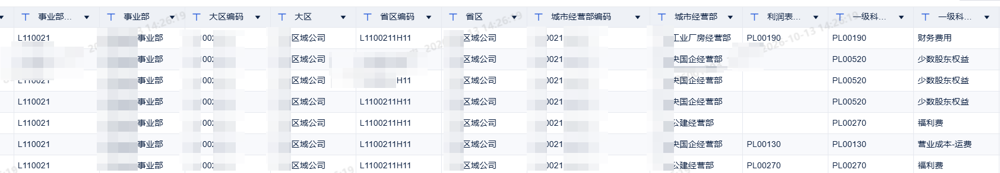
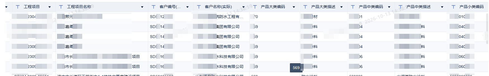
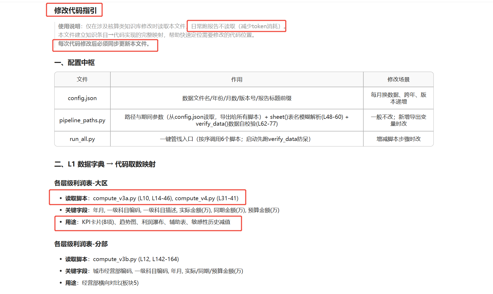
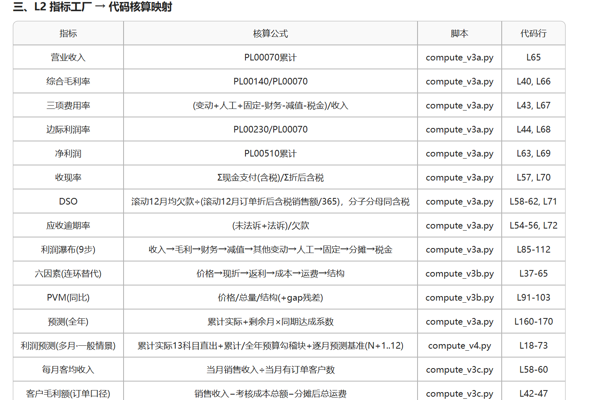

AI
价值成果分享
从"不敢喂"到"放心用"
AI 财务数据分析的脱敏闭环与工具化落地
一套让敏感数据安全进入大模型、又能稳定产出经营分析报告的完整实践
01安全边界
02脱敏原理
03脱敏闭环
04工具化 BASIC
05工具化 PLUS
06冷思考
07头脑风暴
分享人：王冉冉 · 2026 年 10 月
01
PART 1 · 安全边界
数据发出去之前，先想清楚它会去哪
用大模型的第一道门槛，不是会不会写提示词，而是搞清楚数据的去向：每一次调用，数据都会离开我们的电脑、经过网络、抵达厂商的服务器——链路上有谁、能看见什么，决定了我们"敢不敢喂"。
1云上模型（最常用）：DeepSeek、K3、Claude、OpenAI 系列可选面最全，按 token 计费、即接即用；但数据需出域传输，安全依赖厂商加密与合规体系。
2本地部署：数据不出内网、物理隔离、合规可控；但依赖服务器与显卡等固定资产投入，选型和更新靠自己跟进。
3两条路线的本质：用便利与能力换安全，还是用安全换门槛——这道选择题，是我们后面全部工作的起点。
本节结论：想用最强的模型能力，数据往往就要出去。很多人"不敢喂"的顾虑，正是从这里来的。
下一页 → 数据在网络上的真实路径
截图 本地部署 vs 云上模型：常用模型 · 成本 · 传输方式与信息安全性
01
PART 1 · 安全边界
同样的请求，两条不同的路
HTTPS/TLS 决定传输过程是否加密，但"加密"不等于"没人看见"——中转站的存在，决定了有谁能看到明文。
1官方直连：一跳直达、链路最短。TLS 在厂商侧终止，数据按 DPA 约定处理，责任边界清晰。
2经中转站：两跳。中转服务器上 TLS 提前终止，对话内容与 API Key 在这里明文可见——多了一个不受我们控制的节点。
3风险的实质：不在"有没有加密"，而在"链路上多了几个能看明文的角色"。
划重点：中转站用起来省事，代价是明文多暴露一站。对企业敏感数据而言，这一站就足够危险。
既要能力又要可控，本地部署行不行？下一页算一笔账 →
01
PART 1 · 安全边界
本地部署行不行？——算一笔现实的账
理想很美好：数据不出内网，一切自己掌控。但现实很快给出另一个答案——算力门槛。
1云端烧钱的体感：同事沟通的原话——"之前一个问题干了我 40 的额度"。大模型按 token 计费，用起来确实烧得快。
2自己部署的代价：我们现有的算力是16 张 H20，市价 160 万以上，这还没算机房、电力与运维。
3更现实的一层：这些算力是分摊到每个人的公共资源，不可能为一张月度报表长期专用。
所以结论很清楚：本地部署不现实，云上模型必须用。那就只剩一条路——把喂出去的数据先变"安全"。这正是接下来要讲的：脱敏。
02
PART 2 · 脱敏原理
先从一道熟悉的会计题说起
非货币性资产交换：甲公司以 A00 铝锭，换乙公司的 1# 电解铜——判断商业实质、计算入账价值、编制分录，都是当年的"熟面孔"。做题时不知道大家有没有留意一个细节：
1把"甲公司"换成"M 公司"、把"A00 铝锭"换成"M1 货物"，这道题还做得出来吗？——照样能做，一步都不会少。
2因为题目真正考查的是规律与逻辑：公允价值、补价、增值税、入账价值的计算链条，跟标签叫什么毫无关系。
3真实标签只对一类人有意义——知道"密码本"、能把 M 公司还原回甲公司的人。
顺着这个思路想：我们的经营数据，能不能也这样"换标签"之后再发给 AI？——保留规律，替换敏感名称。
按 → 看这套思想的完整表述
截图 会计例题：非货币性资产交换（甲公司 / 乙公司 / A00 铝锭 / 1# 电解铜）
02
PART 2 · 脱敏原理
脱敏的本质：我们出题，AI 做题
把"换标签"的思想平移到数据上：在保留规律性的同时替换敏感信息，一份真实的经营数据，就变成了一道出给 AI 的"加密题"。
✍ 出题人 · 我们
掌握真实标签与"密码本"；负责把敏感的编码、名称替换成规律化的代号，拿到结果后再负责反脱敏还原。数据从头到尾不出我们自己的电脑。
🤖 做题人 · AI
只看到替换后的"加密题"；依据数据的规律与业务逻辑进行计算与分析——它可以做对每一道题，却始终不知道标签背后是谁。
原始数据真实编码 + 名称
→
标签替换 1:1本地方案 · 离线运行
→
加密数据规律保留 · 敏感消失
→
AI 分析计算按规律解题
→
反脱敏还原对照密码本 1:1
→
真实结论只有我们知道含义
数据和结果对 AI 无效，对知道真实标签的我们有效
这个思想如何落到我们自己的数据上？进入 PART 3 →
03
PART 3 · 脱敏闭环
先认识我们的数据：编码 + 名称，层层有规律
脱敏要落地，得先看清脱敏对象长什么样。我们的数据有两个鲜明特点：组织维度层层编码——事业部、大区、省区、城市经营部，一级级编下来；业务标签成对出现——工程项目、客户、产品大/中/小类，几乎每个敏感名称旁边都跟着一个有规律的编码。
关键洞察：编码是数字和字母的组合，规律性强——有规律，就可替换；可替换，就能写成程序批量处理。我们不需要逐格手工改，只需要一张"密码本"和一段脚本。

截图 1 组织架构层级：事业部 → 大区 → 省区 → 城市经营部，编码 + 名称

截图 2 各类业务标签：工程项目 / 客户 / 产品大中小类，全部"编码+名称"成对出现
03
PART 3 · 脱敏闭环
第一步：让 AI 写"脱敏脚本"
整个过程不需要懂代码——把需求用大白话讲清楚，代码由 AI 写，我们要做的只是"一键运行"。
1脚本按列名识别需要脱敏的字段，用正则匹配执行替换，未匹配的列原样保留——规则清晰、行为可控。
2全程 1:1 替换：一个真实标签只对应一个代号，这是日后能够"还原"的前提。
3特别重要的一步：先不用真的"密码本"——先用假的让 AI 写测试代码，手工运行确认不报错，再离线换回真的。
4换好之后，脚本可脱离 AI、脱离网络独立运行：脱敏在自己电脑上完成，结果不经过任何第三方。
一句话总结：脱敏这件事，AI 只出力，不碰真数据。
截图 excel_masking 脱敏脚本（一键运行）
03
PART 3 · 脱敏闭环
第二步：反脱敏——测试先行，别让"解密"翻车
能加密，就要能还原。反脱敏脚本同样交给 AI 来写，但发给 AI 之前，先把"密码本"换成假的——让 AI 在假数据上，把问题全部暴露出来。
1先让 AI 检索"反脱敏可能出现的问题"，果然抓出最致命的坑：编码前缀存在包含关系，逐个 replace 会发生链式误替换。
2类似隐患还有：颜色值等样式代码里也可能藏着编码，裸替换会把报告"染"花——方案沟通确认后，AI 才开始写代码。
3全部确认之后，才离线把假的密码本换成真的，正式运行。
原则只有一条：真数据永远不过 AI 的手——AI 拿到的永远是假的，真的只在我们自己的电脑上跑。
截图 反脱敏：先用假"密码本"做风险检索与方案确认
03
PART 3 · 脱敏闭环
第三步：独立运行——一次跑通，结果完全一致
最后，要求 AI 把脚本改到"可以独立运行"：不依赖任何对话上下文，任何人在自己的电脑上都能跑。
1换任何配置表都自动生效，零人工判断——规则内化在脚本里，而不是"问一句、改一句"。
2本地独立实测：42 处替换、0 争议、3 个未命中，与此前人工核对的结果完全一致。
3脚本固化到本地目录，成为可复用的工具，而不是一段一次性的对话——这是"对话"与"工具"的分水岭。
至此：脱敏 → 发给 AI → 反脱敏还原，全链路闭环，"不敢喂"变成了"放心喂"。
但是——放心喂了，就够了吗？→ PART 4
截图 反脱敏脚本独立运行验证（42 处替换 · 0 争议）
?
PART 4 · 工具化 BASIC
数据脱敏了，然后呢？
直接发给 AI，让它出报告？
数据体量动辄几万行、若干个 Sheet，一个对话窗口根本装不下
上下文不足硬塞给 AI 直接算，算到一半就"断片"，口径错、数字错
Token 烧钱每次都从头喂全量数据，成本蹭蹭往上走
我们做到了放心喂，但还没做到用着不烧心
04
PART 4 · 工具化 BASIC
BASIC 版：把"一次对话"升级成"一套流程"
解决思路不是换更强的模型，而是改工作方式：把月度报告拆成三个稳定环节，每一环都有明确的输入、执行与产出——人工闭环，口径与经验逐月沉淀。
1提供数据 本月数据 + 口径要求直接进入执行；换月动作全程人工、逐处核对后再进入执行。
2执行报告生成 读取知识库 L1-L4 对齐口径 → 检查 data.xlsx 与配置 → 跑脚本生成 HTML 报告。
3归因确认与知识修正 数字与业务直觉互相核对，确认后把新知识写回 L1-L4，知识库随使用持续生长。
图示 大区月度经营分析 AI 工具化 · BASIC 全景
04
PART 4 · 工具化 BASIC
成果：AI 生成的月度经营分析报告
结论先行、口径统一、图表齐全。这里的原则是：数字由脚本确定性计算，观点由 AI 按知识库口径撰写，人工做终审——既美观，又经得起推敲。请用左右键翻看四张样张。
样张 1 核心发现摘要 + 经营概况 KPI 总览（结论先行）
05
PART 5 · 工具化 PLUS
PLUS 版：把"怎么用、怎么改"也管起来
BASIC 跑通了"生成"，但工具要长期用下去，还得解决迭代与协作的问题。PLUS 版的三个关键改动：
1新增环节一 · 前置交互 动手之前先问两件事：口径/知识有没有变化？要不要动分析代码？避免白跑一轮。
2写入日志 知识库、代码、SKILL 的每一次修改都留痕——可追溯、可回滚、可审计。
3修改代码指引 建立知识条目 ↔ 文件+行号的映射，改知识必须联动改代码，禁止"只改知识、不改代码"。
图示 全流程 PLUS：前置交互 / 执行生成 / 交付反馈 + 反馈闭环 + 写入日志
05
PART 5 · 工具化 PLUS
落地痕迹：日志与指引长什么样
上面三条改动不是概念，都留下了真实的落地痕迹——每一处改动都有出处。
1Skill 写入日志 SKILL.md 从 V6 到 V9 定稿的每一步都记录在案：硬约束修正、规则联动检查、先读指引定位代码、Phase 0 前置交互。
2使用说明 仅涉及核算类知识库修改时读取；日常跑报告不读取，减少 token 消耗——知识文件也讲究"按需加载"。
3L2 指标工厂 每个指标对应核算公式、脚本与行号，AI 按图索骥、改有所据。
截图 1 Skill 写入日志：每次修改留痕（超宽表，点击可放大细看）


截图 2 修改代码指引：使用说明 / 配置中枢 / L1 数据字典（左） · L2 指标工厂（右）
?
PART 6 · 冷思考
还能怎么升级？要不要来个 Pro 版？
形式创新Skill 换成 Agent？听起来更智能
极致美感更炫的前端渲染、更漂亮的版式？
然后呢？报告更好看了，分析更准了吗？
这些方向有价值，但在当前迭代里缺乏性价比——
AI 生成"美观又像模像样"的报告非常容易，token 要花在刀刃上
06
PART 6 · 冷思考
他山之石：可信推理是一套工程能力
方向对不对，可以借外部研究来校准。陈亚盛教授关于"企业级财务 AI 可信推理"的论述，有两点与我们高度共鸣：
1可信推理的本质是一整套工程化能力，而非单纯的模型能力：依据明确、对象清楚、过程可追溯、动作受控——这也解释了我们的闭环为什么要把规则、日志、复核做进流程。
2知识需要持续沉淀：高频口径沉淀成知识页，先读知识、再回原始证据，避免每次从零推理——我们的知识库正在做同样的事。
3一个类比：早上闹钟响了起不来，是闹钟订少了吗？订十个八个就能起来吗？——销量上不来、应收下不去，把考核难度狠狠加上去，同样不是答案。真正起作用的，是让执行者真正"懂"这件事。对 AI，也是一样。
所以：要让 AI 懂我们的业务模型。这类积累进度缓慢，除非开始系统性地沉淀、蒸馏集体的智慧。→ PART 7
观点摘编自《企业级财务 AI 如何实现可信推理》，陈亚盛（厦门大学会计系教授、博士生导师），原载微信公众号「高顿咨询」；观点归属原作者，仅作学习交流。
学习笔记 企业级财务 AI：可信推理的核心框架与关键技术
07
PART 7 · 头脑风暴
下一步：让 AI 懂我们的业务
让 AI 真正"懂业务"，业界常见的是小模型（SLM）落地知识管理的三条路径——好消息是，我们已经在第一条上跑起来了。
1人在回路持续迭代 上手最快、成本最低；模型给结果、人来检验修正，知识库随使用生长——现在的闭环正是这条路。
2领域微调 以通用小模型为基座做领域训练，能力内化、可私有化部署在内网，适合任务固定的财务 BP 专属助手。
3蒸馏 由大模型对业务问题逐条给出高质量答案形成"教材"，小模型学会后承担日常任务，效果上限最高。
图示 头脑风暴：SLM 落地知识管理三条路径（做法 · 优缺点 · 成本 · 适用场景）
Q&A
谢谢聆听
欢迎交流 · Q&A
从"不敢喂"到"放心用"，靠的是一个可复现的闭环，
而不是一次惊艳的演示。
王冉冉 · 2026 年 10 月
附录 A1 · 备查
反脱敏：AI 风险检索全过程
备查材料：AI 检索出的替换风险与三类规避方案——整串精确匹配、JSON 结构化替换、样式段整体跳过。
要点：先检索、再确认方案、最后写代码——沟通确认的环节不可省。
附录 A2 · 备查
反脱敏：改到可独立运行
备查材料：从"依赖对话上下文"到"独立 AI 自行运行"的最后一轮修改。
要点：拼成单个正则一次扫描，换任何配置表自动生效，零人工判断。
附录 A3 · 备查
反脱敏：投入实际使用
备查材料：生产环境中批量生成、反脱敏后的月度分析报告与配套脚本——不是演示品，是每个月真的在跑的流程。
1 / 22
单击 翻页（Shift+单击 后退） · 双击图片放大 · 右键 激光点 · H 帮助 · F 全屏
操作说明
→←优先切换当前页图片，切完再按即翻到下一页 / 上一页
↑↓SpacePgUpPgDn直接翻页
单击翻到下一页（Shift+单击 上一页）；翻页笔/激光笔的 PgUp·PgDn 全局有效
双击图片放大查看；切到 1:1 可看原始大小，按住拖动平移
右键红色激光点 开/关（跟随鼠标，再按右键或 Esc 关闭）
A进入附录（反脱敏备查材料）；Home/End 回封面 / 结尾
F全屏投影 · H 或 ? 打开本说明 · Esc 关闭弹层
建议节奏（全场约 10 分钟） 安全边界 1.5′ · 脱敏原理 1.2′ · 脱敏闭环 2.5′ · BASIC+成果 2′ · PLUS 1.3′ · 冷思考 1.2′ · 头脑风暴 0.4′